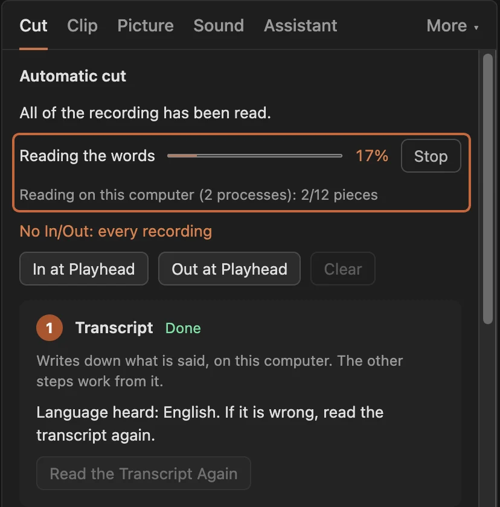
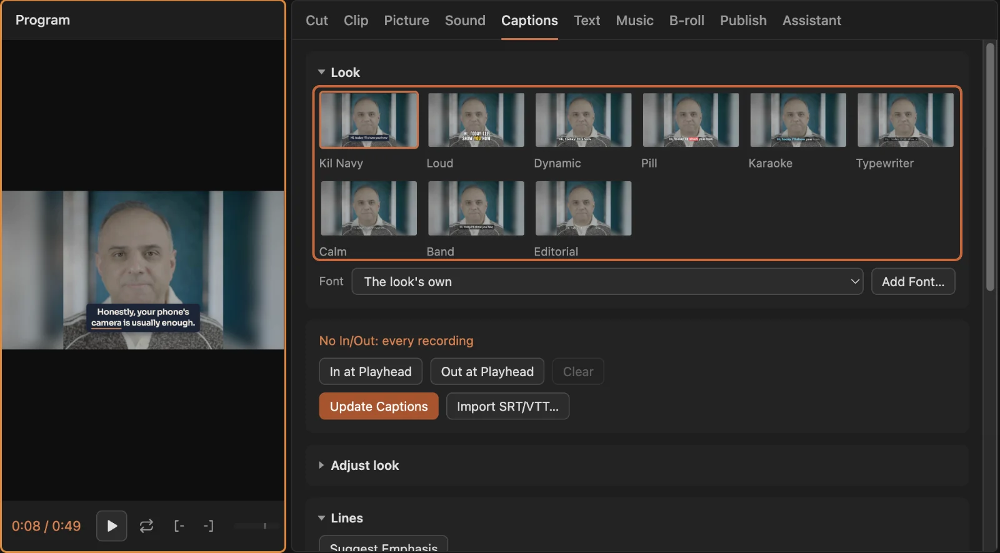

Your first video
This walk-through takes one talking-head recording from the camera to a video ready for YouTube. Each step names the button to press; the panels have pages of their own when you want more.
Before you start
- Install and open Kilnframe DesktopSee Install.
- Connect an AI modelIn the welcome window press Connect a model. If you have a Claude or ChatGPT subscription, signing in is enough (how); otherwise enter an API key. You can also press I'll add it later in Settings: the transcript and the pause cutting work without a model.
- Answer the program questionWhich editing program are you used to? sets the shortcuts and the panels. If you like, press Take the Tour for a short walk through the editor.
Bring in your recording
- Drop the fileDrag your video onto Drop your video or audio here in the Start Window, or press Add Files. A project opens with the recording on the timeline.

Let it cut
Everything in this part happens in the Cut tab at the right.
- TranscribeUnder 1 Transcript, press Transcribe. The speech is written down on this computer; a progress line shows how far it is.
- Cut the pauses and the umsUnder 2 Pauses and filler words, set the slider between Gentle and Tight, then press Cut Pauses and Cut Filler Words. The length under the viewer drops at once: in our sample, 1:27 became 0:53.
- Clean the retakesUnder 3 Retakes and what does not belong, press Clean Retakes and Asides. Your AI model finds the sentences you said twice, the false starts and the talk not meant for the viewer.
- Decide what it was unsure ofUnder 4 Unsure cuts and takes, listen and press Cut or Keep. In a group of retakes, Use This Take picks the one that stays.



Want to cut a word by hand? Select it in the Transcript at the left and press Delete. Click a struck-out word to bring it back. See Transcript.
Add an animation
- Choose a stretchPlay to where the animation should start and press I, then to where it ends and press O. You can also select words in the transcript and choose Mark In and Out to Selection.
- Make itOpen the Animations tab, pick a style, and press Make Animation. A note, a logo or a photo under Note and Images (optional) steers it.
- Approve the scenesFirst you see a still of each scene. Change one with Rewrite Scene; when you like them, press Approve and Create. The animation lands on its own track above your recording.


Captions and sound
- CaptionsOpen the Captions tab, pick a Look and press Make Captions.
- LoudnessIn the Sound tab, under Effects, set Loudness to YouTube (-14 LUFS).

Export
- Open ExportPress Export at the top right.
- Pick the sizeUnder Size choose YouTube. High (recommended) and H.264 (plays everywhere) are right for most videos.
- Save itPress Export… and choose where the file goes.

Every step above can be undone with Undo, or from History. More in Export and Projects and files.